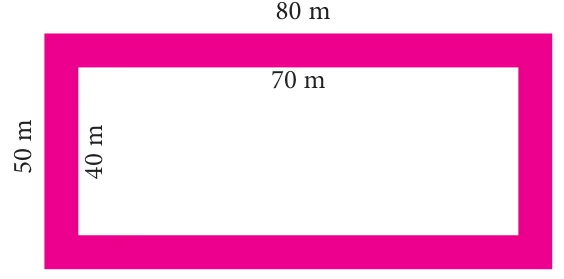

- Find the area of a circular pathway whose outer radius is 32 cm and inner radius is 18 cm.
- There is a circular lawn of radius 28 m. A path of 7 m width is laid around the lawn. What will be the area of the path?
- A circular carpet whose radius is 106 cm is laid on a circular hall of radius 120 cm. Find the area of the hall uncovered by the carpet.
- A school ground is in the shape of a circle with radius 103 m. Four tracks each of 3 m wide has to be constructed inside the ground for the purpose of track events. Find the cost of constructing the track at the rate of ₹50 per sq.m.

- The figure shown is the aerial view of the pathway. Find the area of the pathway.

- A rectangular garden has dimensions \(11\text{ m} \times 8\text{ m}\). A path of 2 m wide has to be constructed along its sides. Find the area of the path.
- A picture is painted on a ceiling of a marriage hall whose length and breadth are 18 m and 7 m respectively. There is a border of 10 cm along each of its sides. Find the area of the border.
- A canal of width 1 m is constructed all along inside the field which is 24 m long and 15 m wide. Find (i) the area of the canal (ii) the cost of constructing the canal at the rate of ₹12 per sq.m.
Objective type questions
- The formula to find the area of the circular path is
(i) \(\pi(R^2 - r^2)\) sq. units (ii) \(\pi r^2\) sq. units (iii) \(2\pi r^2\) sq. units (iv) \(\pi r^2 + 2r\) sq. units
- The formula used to find the area of the rectangular path is
(i) \(\pi(R^2 - r^2)\) sq. units (ii) \((L \times B) - (l \times b)\) sq. units (iii) \(LB\) sq. units (iv) \(lb\) sq. units
- The formula to find the width of the circular path is
(i) \((L - l)\) units (ii) \((B - b)\) units (iii) \((R - r)\) units (iv) \((r - R)\) units